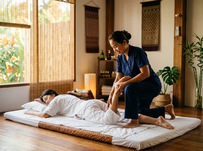

Most people know they want a massage.
Fewer people know which type they actually need. If you've ever stared at a treatment menu wondering whether to choose traditional Thai massage or a Swedish massage, you're not alone. Both are popular, both work, and both feel good in very different ways. The difference comes down to what your body is asking for and understanding that helps you leave feeling genuinely better, not just vaguely relaxed.
Swedish massage was developed in Europe during the 19th century, drawing on Western anatomy and physiology. It uses long, gliding strokes, kneading, and circular movements applied directly to the skin, almost always with oil or lotion. The goal is to ease muscle tension, improve blood circulation, and bring the nervous system down from whatever state it's been in all day.

Thai massage has a completely different lineage. Rooted in ancient Southeast Asian healing traditions and closely tied to the teachings at Wat Pho in Bangkok, it predates Swedish massage by well over a thousand years. Rather than focusing on surface muscle groups, Thai massage works along the body's sen energy lines, using acupressure, joint mobilisation, and assisted stretching to release tension and restore balance throughout the whole body.
At Glasgow Thai Massage, the tradition practiced by Maliwan and Jariya follows directly from that Wat Pho lineage. It's not a hybrid or a Western spa interpretation. It's the real thing, delivered in Glasgow city centre.
In a Swedish massage session, you undress and lie on a treatment table while the therapist applies oil and works through different stroke techniques. The pressure is generally steady and soothing, and the experience is largely passive. You relax, the therapist works, and tension gradually releases.
Thai massage is a different kind of partnership. You stay fully clothed in loose, comfortable clothing, and the session takes place on a mat at floor level. Your therapist moves your body through a series of assisted stretches, applies acupressure along the sen lines, and uses rhythmic compression to free up joints and muscle tissue.
It's sometimes described as assisted yoga, which captures the active, full-body quality of the experience. Both styles address muscle tension and stress — they just arrive there by very different routes.
If you want to book a session and aren't sure which to choose, the question below will usually give you the answer.
Thai massage wins clearly here. The assisted stretching component targets joints, tendons, and connective tissue in ways that Swedish strokes simply don't reach. Over time, regular Thai massage sessions can meaningfully improve flexibility and range of motion.
This is why it's particularly valued by people who sit at a desk all day, athletes managing tightness, and anyone who's noticed their body getting stiffer with age. Swedish massage improves circulation and loosens superficial muscle tension, which contributes to better movement. But if flexibility and physical ease are the goal, traditional Thai massage is the more direct route.
Swedish massage has a strong edge when pure relaxation is the priority. The slow, rhythmic strokes and warm oil have a deeply calming effect on the nervous system. For someone experiencing anxiety, poor sleep, or the kind of mental fatigue that builds up over weeks of pressure, a Swedish-style session can feel like pressing a reset button.
That said, Thai massage produces its own distinct form of relaxation. It's less about sinking into stillness and more about the sense of ease and lightness that follows when tension has genuinely been worked out of the body.
Many clients find that after a full Thai massage session, they feel both calmer and more energised — a combination that's harder to achieve with Swedish technique alone.
Glasgow Thai Massage offers a Thai oil massage that brings both approaches together, combining therapeutic technique with the sensory benefit of warm oil.
Choose Thai massage if you carry chronic tightness, have a desk job, play sport, or want to address specific areas like neck and shoulder tension, lower back stiffness, or reduced mobility in the hips. It's also a better fit if you'd rather stay clothed during treatment.
Choose Swedish massage if your main concern is stress, anxiety, or general nervous system recovery. It's also the gentler introduction for anyone who has never had a professional massage before and isn't sure what to expect.
For sports recovery and performance, Thai sports massage offers a focused option that blends Thai technique with targeted soft tissue work. It's built around what active bodies actually need, not a one-size-fits-all approach.
Ultimately, both styles are worth trying. Many regular clients at Glasgow Thai Massage alternate between the two depending on what a given week has demanded. The best massage is the one that meets you where you are — and knowing the difference is the first step to getting that right.
No. Traditional Thai massage is performed fully clothed. You'll be asked to wear loose, comfortable clothing so the therapist can guide your body through stretches and apply acupressure freely.
There's no oil used in a traditional Thai session. If you opt for a Thai oil massage, partial undressing is required, but privacy and comfort are maintained throughout.
Thai massage uses firmer pressure and active stretching, so it can feel more intense than Swedish massage, but it shouldn't be painful. A skilled therapist will always work within your comfort level, and you should communicate openly if the pressure feels too much.
Many clients describe the sensation as a "good hurt" that leaves them feeling looser and lighter afterwards.
Both Thai and Swedish massage sessions are typically available in 60- or 90-minute options. For Thai massage in particular, a longer session allows the therapist to work through the full body properly.
A 60-minute session is a good starting point. 90 minutes is recommended if you're carrying tension across multiple areas or want a more thorough treatment.
Yes. Thai massage is particularly effective for back pain caused by muscle tightness, poor posture, or restricted movement in the hips and spine. The combination of acupressure along the sen energy lines and assisted stretching can release tension that contributes to both upper and lower back discomfort.
For chronic lower back pain, it's worth reading more about massage for lower back pain to understand what to expect.
For general wellbeing and stress management, once or twice a month is a reasonable starting point. If you're using massage to address a specific issue — such as chronic neck tension, sports recovery, or persistent back pain — more frequent sessions, especially at first, will produce faster results.
Your therapist can advise on a schedule that suits your situation and budget.